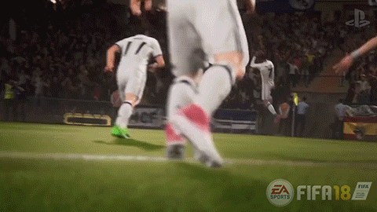

Fifa 18 es un videojuego de fútbol, desarrollado por Electronic Arts y publicado por EA Sports Estados Unidos. Será el 25º de la serie de videojuegos de la FIFA. Saldrá a la venta el 29 de septiembre de 2017 y la portada del mismo será Cristiano Ronaldo. Asimismo habrá una edición "Icono" con Ronaldo Luís Nazario en la portada. Este será el segundo juego de la FIFA en la serie, tras el anterior FIFA 17, en emplear el motor de juego Frostbite, con excepción de las versiones para Play Station 3, Xbox 360 y Nintendo Switch. Tendra un precio cercano a $59.99.